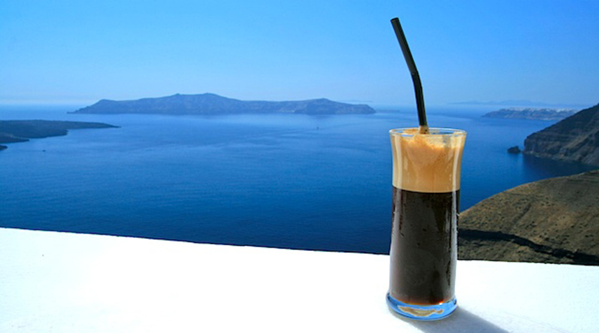
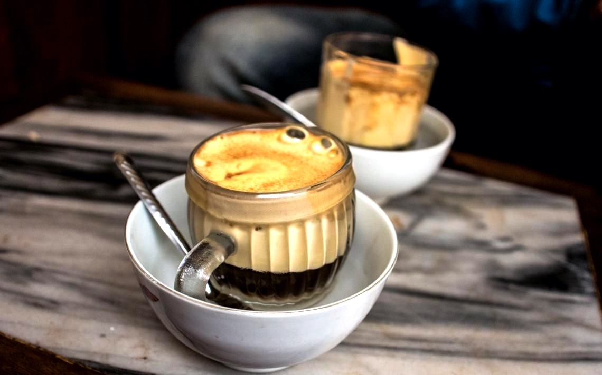

In a medium saucepan, place the water, cinnamon, and piloncillo.
Turn the heat down and simmer until the piloncillo is dissolved.
When the water starts boiling, add the coffee, turn the heat off and stir.
Cover the pot and let it steep for 5 minutes.
Pour through a strainer to serve.
Frappe from Greece

How to make a Frappe
Place the coffee, sugar, and 2 tablespoons cold water in a shaker, jar, blender, or drink mixer. Cover and shake well for about 30 seconds, or, if using a blender, drink mixer, or handheld frother, mix for 15 seconds until you have a thick foam.
Toss a few ice cubes in a tall glass. Slowly pour the foamy coffee mixture into the glass. Fill the glass with water, adding milk if desired. Serve the frappe immediately.
Egg Coffee from Vietnam

How to make Egg Coffee
Gather all your ingredients and brew 12 ounces of strong espresso style coffee.
Add the egg yolk and sweetened condensed milk to a pitcher and whip with a hand blender.
Continue whipping until you have soft peaks and the volume will more than double.
Add the espresso to the 2 cups of coffee and then spoon on the whipped egg mixture over the top.
Explore our store to purchase coffee beans from around the world